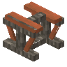

金合欢铁路桥
Acacia Rail Bridge
英文名: Acacia Rail Bridge命名空间 ID:
mcwbridges:acacia_rail_bridge类型: 方块所属模组: Macaw's Bridges资料检索: 🔎 在 MC百科 搜索「金合欢铁路桥」合成获得 (1)
有序合成Macaw's Bridges

原始 JSON
{
"type": "minecraft:crafting_shaped",
"group": "rail_bridges",
"pattern": [
"F F",
"FWF"
],
"key": {
"F": {
"item": "minecraft:acacia_fence"
},
"W": {
"item": "minecraft:acacia_slab"
}
},
"result": {
"count": 4,
"id": "mcwbridges:acacia_rail_bridge"
}
}